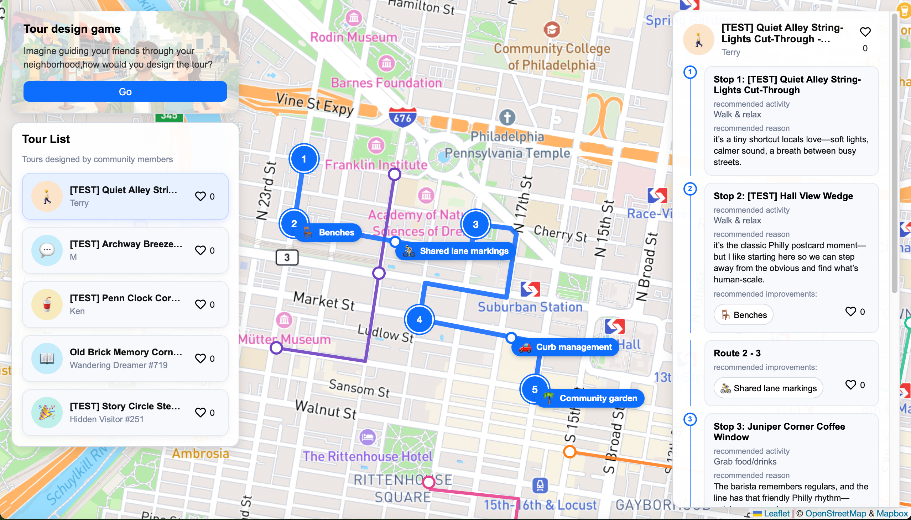
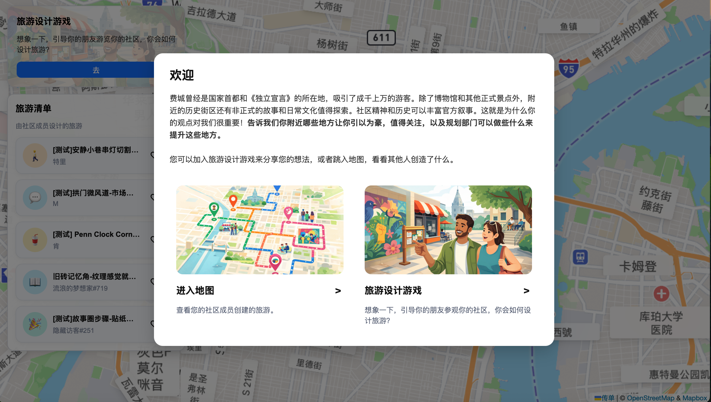
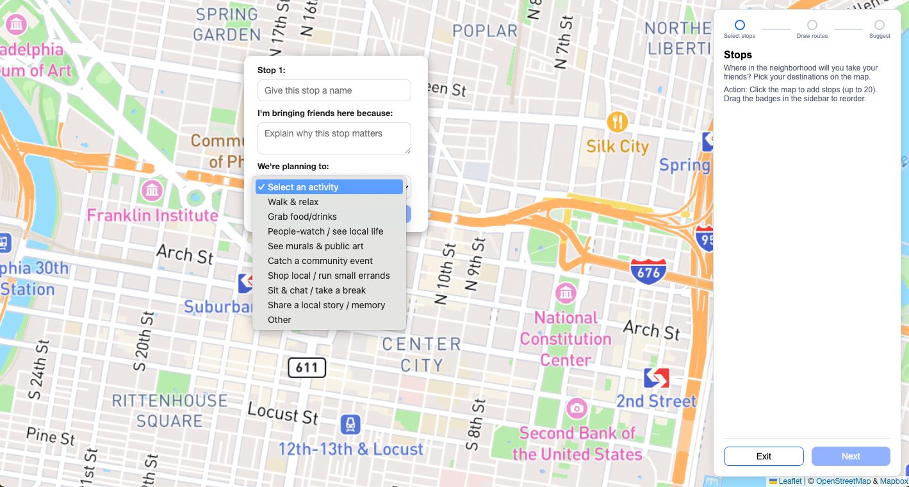
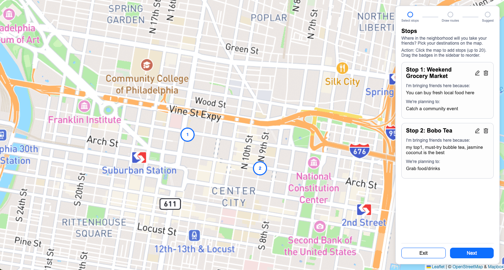
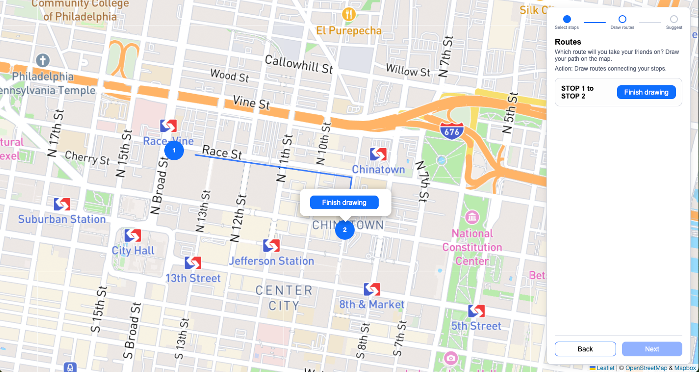
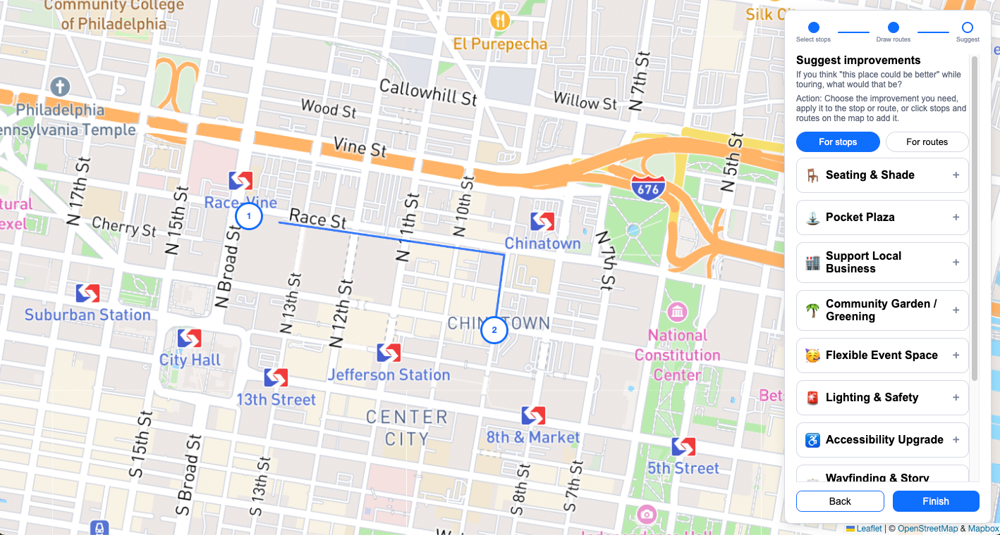
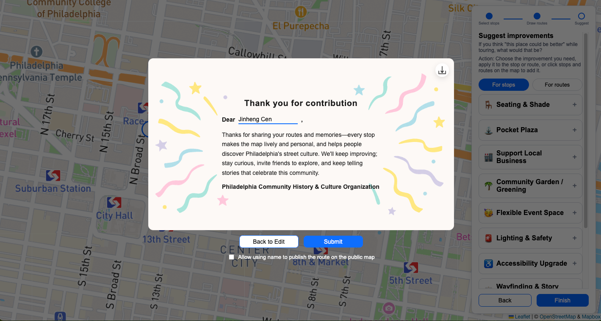
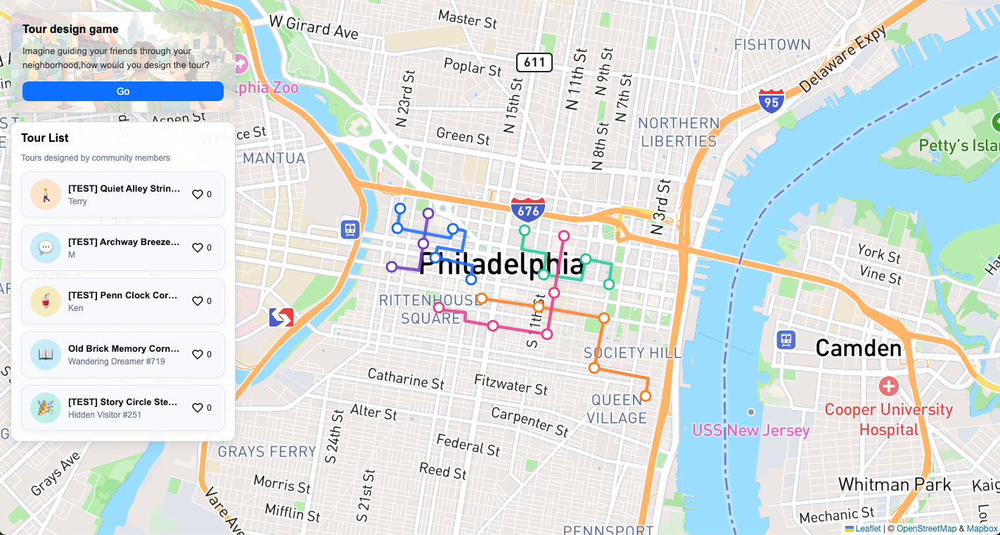
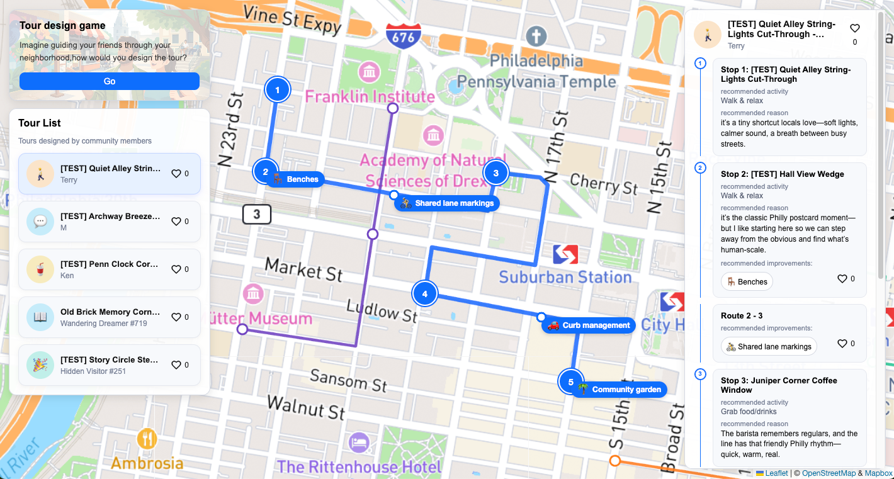

费城是美国的前首都，也是《独立宣言》的诞生地，每年吸引成千上万的游客。除了博物馆，宪法公园等官方的景点外，周边街区的小街小巷同样值得游客探索，这些日常的故事与文化能丰富游览体验。
但这些信息只有本地居民才知道，或者有资格去评说。因此，规划部门希望向居民了解——有什么地方是能代表这个社区的？什么地方有故事和历史值得向游客分享？什么地方能代表这个社区的特色？基于居民提供的信息，规划部门将据此进行游览路径的规划，以及相应街道设施的提升。
我们希望通过一个在线的工具，让居民在画板中标记出这些地点，并写出自己的想法。
项目遇到的挑战集中在两个方面：
我们的产品在充分理解规划部门想获得什么信息的需求上，将抽象的信息需求翻译成具体的，通俗的表达，从而确定了要收集的内容。
我们还通过情景模拟的方式切入问题的具体场景。让居民模拟的情景是：“如果要带朋友来参观自己的社区一天，你会怎么规划行程呢？”，从而引导用户在具体场景下发表看法，意见。
该项目是黑客松（Hackathon）模式，我们在2天内完成了产品的设计和开发，因此是MVP版本，有提升和迭代空间。如产品设计上，针对不同用户和场景进行优化；交互体验上，增加新手教程和优化操作体验。
黑客松是一种短期的创作营，团队在限定的极短时间内，针对某个真实的主题从0到1设计产品方案并完成开发
下文将简要展示该社区参与画板：
注意：图片均使用了翻译，翻译结果可能不准确。（下同）

欢迎浮窗：向用户介绍项目的意义；用户可以选择进入哪一个界面

用户点击右方按钮开始设计自己推荐的游径
第一步选择推荐的景点，每个景点都需要填写名称，推荐的理由和选择推荐的活动

完成景点推荐后，内容会在右侧显示

用户需要绘制推荐的游览路径，连接推荐的两个景点

用户可以对景点和路径选择设计提升的建议

编辑完成后点击提交，用户会收到一封感谢信，可以输入自己的名字并下载留念

提交后，默认返回游径地图：用户可以浏览其他人推荐的游径

点击某一条游径可以看到推荐景点、路径、推荐的理由、推荐活动
预览窗口可能显示不完全，建议跳转到展示网页体验
不支持移动端